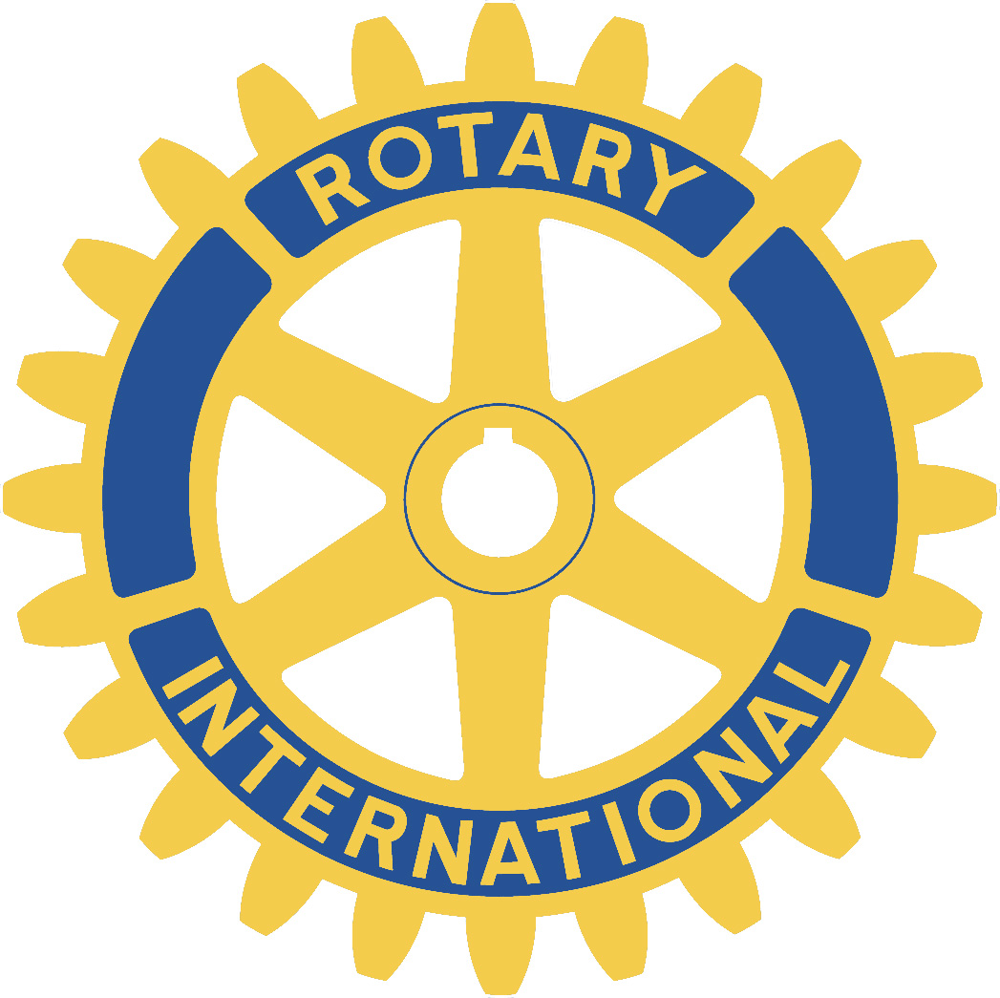
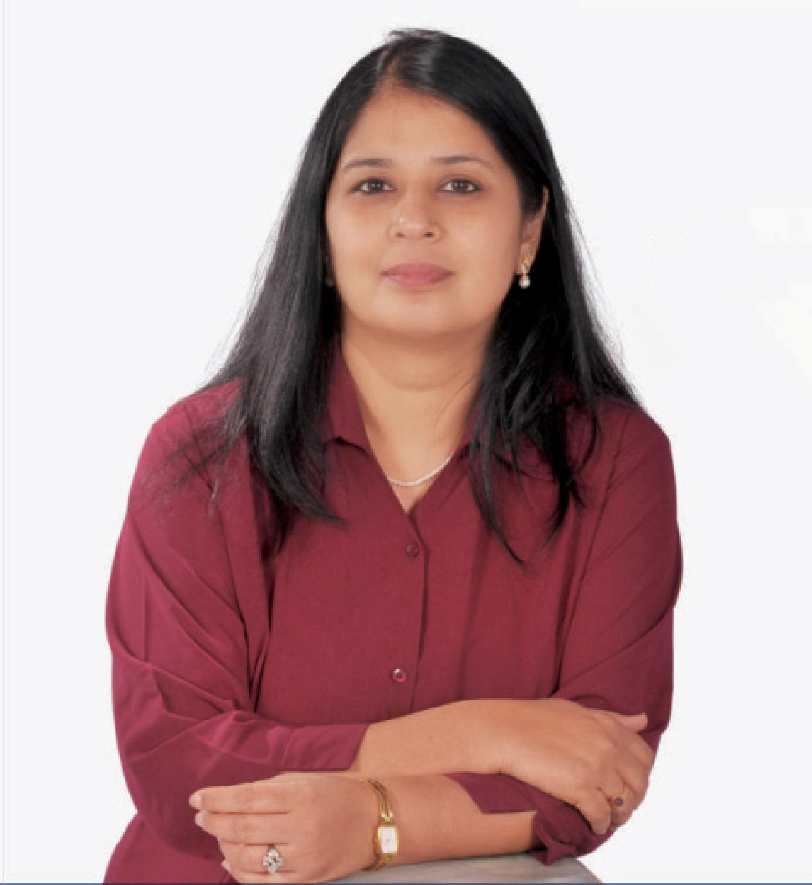
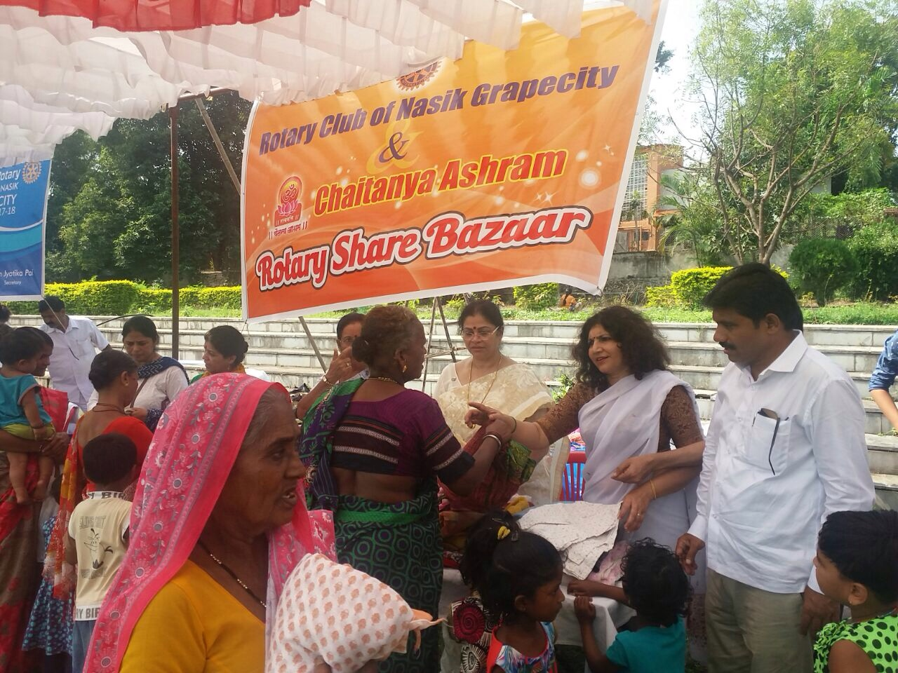
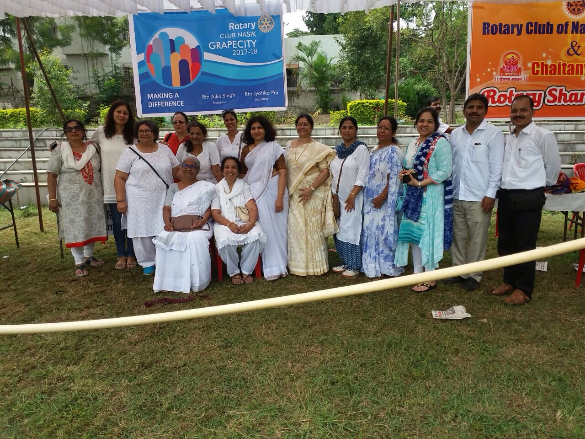
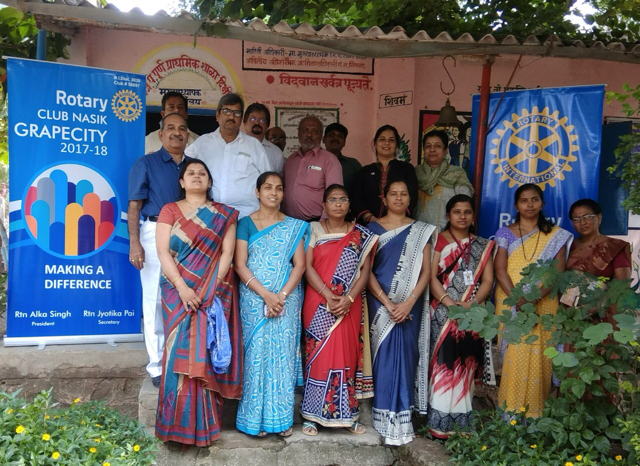
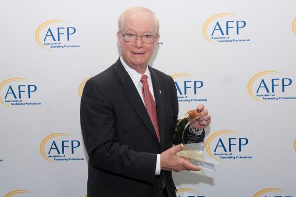

|

Rotary Club NasikGRAPECITYSaturday, 8th July 2017 GRAPEVINE |
President's Address

Dear Friends, On 30th September we concluded our first trimester of Rotary year 2017-18. Through this period it has been heartening to see members coming forward and taking initiatives. We formed groups of club members, and this has helped us to share responsibilities and to enhance activities each month. We are working on getting all our members registered on My Rotary. During these three months there has been good attendance from members at regular meetings and projects. We shall also be inducting three new members in October. Our club is strengthening, and it is growing!
I look forward to working with each of you within the wonderful framework of Rotary: Making A Difference. Rtn Alka Singh Ptrsident |
Rotary BazaarThe early morning of Sunday the 8th october saw the brigade of RCN Grapecity gathering at the swimming pool ground of ASHWIN NAGAR for the Rotary Share Bazaar with the cooperation of Chaitanya Ashram.1230 needy beneficiaries got clothes, sarees, shirts,trousers & Jeans, dresses, dupattas, Chappels, shoes,kitchen utensils, children dresses, bedsheets , travel bags etc , some new & other old but in good condition were distributed by Rotary members & rotary annes who worked dedicatedly as a team for collecting, sorting out and the distribution of the same . Kudos to the President Alka Singh, Director projects Meenakshi Mittal for their motivation & enthusiasm that kept the team going. The success of the project was well supported by the devotees of Chaitanya Ashram & the blessings of Swami Sampoornanad. The members of RCN Grapecity extend a heart felt thanks to Swamiji for the Divine gratification. God Bless! |
Medical Camp at Dixi village ZP school OzarToday 26th September 2017 between 11.00 am and 4.00 pm the health check up camp was organized by Rotarians Asif Sheikh, Naresh Shah, Uday Patankar and myself at ZP School situated in Dixi village, near Ozar town along Sukene Road, Nasik with help of Dr. Irfan Khan and his staff 12members in all from the Samata Blood Bank, Mumbai Naka. Totally 254 students were checked in respect of weight, height, general Physical/ Health , blood group for all, haemoglobin for girls, etc. A detail report is awaiting. On receipt it will be delivered to the school authority by the hands of the Present of the club. Arrangements for further treatment for the weak students will be done later. On third October 2017,m my self along with Alka Singh President RI Grapecity Nasik and Rtrn Nareshbhai, Uday Patankar, I PP Asif Shaikh, would be member Mrs. Kiranchandra went to the ZP School Dixi, and handed over the examination cards of 254 students of Pre secondary and Secondary school students to Principal shri. Pawar, vice principal shri Khare, Teacher smt Rupali Bodake and others at 12.30pm. The staff expressed their gratitude for the work done by the Rotarians of Grape City Nasik Club. Also they presented many other requirements for the students, President Alka Singh asked them to list those with priorities for needy student's, which will be taken care of as per availability of funds and other resources. |
WEEKLY MEETING RECORD FROM JULY TO SEPTEMBER-201713/07/2017 ASSEMBLY 20/07/2017 Speaker: Dr Archana Khairnar Subject: Rubella Vaccine 27/07/2017 Speaker: Dr Mrs. Medha Saykhedkar Subject: Expanding the idea of India 03/08/2017 Speaker: Ms. Vasundhara Talwade Subject: Taming Mt. kilimanjaro-experiences in Africa 10/08/2017 Speaker: Bhavesh Brahmankar Subject: Green Warriors 17/08/2017 Speaker: Mr Pravin Mankar Subject: Bag packing tour to USA 24/08/2017 Speaker: PP Rtn. Asha Venugopal Subject: Membership awaewness & Rotary Central 07/09/2017 Speaker: Dr Bhausaheb More Subject: Organ Donation 14/09/2017 Speaker: Mr Hemchand Rajput Subject: Terrace Garden 21/09/2017 Speaker: Lt Col. G.S. Shrinivasan Subject: Marathon race Cycling Race across America 28/09/2017 Speaker: Rtn. Dr. Rochana Rai R C Nasik Road |
INTERACT CLUBInstallation kilbil school on 20 th , July-2017 Installation ceremony of kilbil Interact club for the year 2017-18 took place on 20 th July at their school. The presence of Rtn. Asha Venugopal,Jyotika Pai, Durga Sali, Madhu Shidaye, Kavita Dagavkar, Rajani Gatkal & Dilpal Rana inspied the future Interactors. Principal Sr. Flora & Rtn. Asha gave motivational speeches. Sr Sukreen & Fr. Smith were also present to lend their support. Vermicompost Project 3 rd , August-2017 On 3 rd , August 2017 interact club of kilbil was given a wonderful project by grapecity Nasik. Mrs Bhatt had a wonderful interactive session with the kids as she explained how earthworms are regarded as farmer’s best friend & how to prepare vermicompost. She also invited all the children to her farm for vocational visit to see the benefits of this. Green Warriors at kilbil interact club Mr. Brahmankar gave a presentation on green warriors to the interact club of kilbil. The members were very motivated by the dedication & sincerity of these warriors in various fields of life. Many rotarians like Durga Sali, Uma Datta, Achamma Aloor, etc. participated along with kids. Interact club Dsvitribai Phule School 22ne, September-2017 The project “Green Warriors” Presentation with slide show by Mr. Bhavesh Brahmankar was a grand success. The Presence of D.S.E Rtn. Asha, President Alka Singh, IPP Asif, V.P. Durga Sali, Rtn. Uday & P Achamma Aloor inspired the interactors & other students to plunge into action as soon as the school reopens after Diwali. |
ROTARY’S GUIDING PRINCIPLESThe Four Way Test In 1932, Rotarian Herbert J. Taylor created The Four-Way Test. The test, which has been translated into more than 100 languages, asks the following questions: Of the things we think, say or do
Object of Rotary The Object of Rotary is to encourage and foster the ideal of service as a basis of worthy enterprise and, in particular, to encourage and foster: FIRST: The development of acquaintance as an opportunity for service; SECOND: High ethical standards in business and professions; the recognition of the worthiness of all useful occupations; and the dignifying of each Rotarian’s occupation as an opportunity to serve society; THIRD: The application of the ideal of service in each Rotarian’s personal, business, and community life; FOURTH: The advancement of international understanding, goodwill, and peace through a world fellowship of business and professional persons united in the ideal of service. |
Trustee Chair's Message - October 2017What do we mean when we talk about peace? In 1921, the fourth object of Rotary was established: "The advancement of international understanding, goodwill, and peace through a world fellowship of business and professional persons united in the ideal of service." In Rotary today, we see peace not as an abstract concept but as a living, dynamic expression of human development, integral to our humanitarian mission. Much of our work for peacebuilding depends on the ability of Rotary members to execute three important activities: forming transformative partnerships, raising funds to support our many hundreds of projects, and recruiting and supporting Rotary Peace Fellows in their work. This year The Rotary Foundation formed a strategic partnership with the Institute for Economics and Peace, one of the leading organizations in identifying and measuring the attitudes, institutions, and structures that create and sustain peaceful societies. Through this partnership, Rotary will work with the institute to create an online learning portal for Rotarians and peace fellows to build on their current expertise, apply new methods, and mobilize communities to address the issues underlying conflicts. Our goal is to foster community-based projects in peace and conflict resolution that are practical and impactful. Rotary has also launched a Rotary Peace Centers Major Gifts Initiative to raise funds for new partnerships while continuing to garner contributions to educate and support our peace fellows and more. President Ian H.S. Riseley's six peacebuilding conferences – taking place globally from February to June – will explore the relationship among peace, Rotary's areas of focus, and environmental sustainability. Our history proves that you don't need to be a diplomat to make peace. When you mentor a student struggling to graduate, you are a peacebuilder. When you launch any project to support economic development in your community, you are building conditions for sustainable peace and conflict management. When you support and collaborate with a Rotary Peace Fellow, you are advancing peace. Today's complex conflicts require more creative community-based initiatives. Together we can really make a difference. |